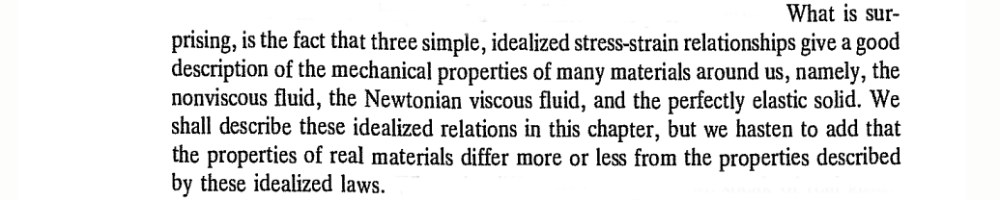
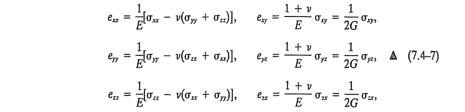

Chapter 7: Constitutive Relations
Reading: [Fung/94] Chapter 7
2026-05-11
Table of Contents
(\(\S7.1\)) Definition
- Define: the dependent and independent variables of the mechanics of solids and fluid
- Define: Constitution, constitutional, constitutive

(\(\S7.4\)) Hookean Elastic Solids
Example: Tensile Test
- How do materials respond to strain? or stress??

- \(\epsilon_{33} \to \epsilon\), the normal strain. \(\tau_{33} \to \sigma\), the normal stress. \[ \epsilon = \kappa \sigma, \hspace{2em} \sigma = E \epsilon \]
- What is the modulus of elasticity, \(E\), of the bar?
Generalization
- \[ \begin{bmatrix} \tau_{11} & \tau_{12} & \tau_{13} \\ \tau_{21} & \tau_{22} & \tau_{23} \\ \tau_{31} & \tau_{32} & \tau_{33} \end{bmatrix} \hspace{2em} ?? \hspace{2em} \begin{bmatrix} \epsilon_{11} & \epsilon_{12} & \epsilon_{13} \\ \epsilon_{21} & \epsilon_{22} & \epsilon_{23} \\ \epsilon_{31} & \epsilon_{32} & \epsilon_{33} \end{bmatrix} \]
- Connections between the stress and strain components? How many of them are there? \(C_{ijkl}\) ??
- Write out one component, e.g., \[ \tau_{23} = C_{2311} \epsilon_{11} + C_{2312} \epsilon_{12} + C_{2313} \epsilon_{13} \ldots + C_{2333} \epsilon_{33} \]
- There are eight other such components! \(9\times 9 = 81\) components in \(C_{ijkl}\) !!
- The general linear stress-strain relation is enclosed within a single indicial expression \[ \tau_{ij} = C_{ijkl} \epsilon_{kl} \]
Reduction
- The actual number of independent material parameters? 81? certainly not!
- Important Note: Stress is a symmetric tensor! Since \(\tau_{ij} = \tau_{ji}\), we need \[ C_{ijkl} \epsilon_{kl} = C_{jikl} \epsilon_{kl} \; \forall \, k,l \]
- This requires that \(C_{ijkl} = C_{jikl}\), and is known as the first minor symmetry in the \(C\) tensor, reducing the number of coefficients, \(81 \to 54\).
- Another Note: Strain is also symmetric!! By the freedom to arbitrarily assign dummy indices, we get \[ C_{ijkl} \epsilon_{kl} = C_{ijkl} \epsilon_{lk} = C_{ijlk} \epsilon_{kl} \]
- This means that \(C_{ijkl} = C_{ijlk}\), and is known as the second minor symmetry, further reducing the number of coefficients, \(54 \to 36\)
- Finally, it can be shown that the coefficient tensor possesses major symmetry in the dual index pairs. \[ C_{ijkl} = C_{klij} \]
- Thus the most general elasticity tensor can be constructed in terms of a total of 21 elastic coefficients.
The Voight Solid
- We reshape the three-by-three stress and strain tensors as one-by-six first order arrays. \[ \left\{ \begin{array}{c} \tau_{11} \\ \tau_{22} \\ \tau_{33} \\ \tau_{23} \\ \tau_{31} \\ \tau_{12} \end{array} \right\} = \begin{bmatrix} C_{1111} & C_{1122} & C_{1133} & C_{1123} & C_{1113} & C_{1112} \\ & C_{2222} & C_{2233} & C_{2223} & C_{2213} & C_{2212} \\ & & C_{3333} & C_{3323} & C_{3313} & C_{3312} \\ & & & C_{2323} & C_{2313} & C_{2312} \\ & \text{sym} & & & C_{1313} & C_{1312} \\ & & & & & C_{1212} \end{bmatrix} \left\{ \begin{array}{c} \epsilon_{11} \\ \epsilon_{22} \\ \epsilon_{33} \\ \epsilon_{23} \\ \epsilon_{31} \\ \epsilon_{12} \end{array} \right\} \]
Isotropy
- Does material behavior change as a function of the stress traction vector?
- Are material properties a function of the orientation?
- If the answer is no or almost no, we call the material to be isotropic.
- In this case, the number of independent elasticity coefficients goes down, \(21 \to 2\).
- For an isotropic material, exactly two independent elastic constants are required to characterize the material
- The constitutive relation for a Hookean solid is called the Hooke’s law reading \[ \sigma_{ij} = \lambda \epsilon_{kk} \delta_{ij} + 2 \mu \epsilon_{ij} \] where \(\lambda\) and \(\mu\) are called Lame’s constants.
in extenso
It will be useful to expand the Hooke’s law from indicial notation to an extensive form
\begin{align} \sigma_{xx} & = \lambda (\epsilon_{xx} + \epsilon_{yy} + \epsilon_{zz}) + 2 G \epsilon_{xx} \\ \sigma_{yy} & = \lambda (\epsilon_{xx} + \epsilon_{yy} + \epsilon_{zz}) + 2 G \epsilon_{yy} \\ \sigma_{zz} & = \lambda (\epsilon_{xx} + \epsilon_{yy} + \epsilon_{zz}) + 2 G \epsilon_{zz} \end{align}\[ \sigma_{yz} = G \epsilon_{yz}, \hspace{2em} \sigma_{zx} = G \epsilon_{zx}, \hspace{2em} \sigma_{xy} = G \epsilon_{xy} \] where \(G=\mu\) is a constant known as the shear modulus.
Inversion
- These equations can be inverted to write the strains in terms of stresses.
- It is customary to introduce another pair of material parameters in writing the inverted form of constitutive relations: the elastic modulus, \(E\), and the Poisson’s ratio, \(\nu\). These are related with \(\lambda\) and \(\mu\).
The inverted form reads

Fluids
- The independent variable describing a fluid motion is the velocity.